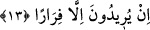

13. Onlardan bir grup da demişti ki: “Ey Yesribliler (Medineliler)! Artık sizin için
durmanın sırası değil, haydi dönün!” İçlerinden bir kısmı ise: “Gerçekten evlerimiz
emniyette değil” diyerek Peygamber’den izin istiyordu; oysa evleri tehlikede
değildi, sadece kaçmayı arzuluyorlardı.
Şunu da hatırlayın ki: “Onlardan” münâfıklardan “bir grup” Evs b. Kayzî ve
görüşünde ona tâbi olanlar “da demişti ki: “Ey Yesribliler” ey Medîne halkı, “artık
sizin için durmanın sırası değil” düşmanın çokluğu ve düşman gruplarının orduların
üstünlüğünden dolayı sizin için burada duracak yer yok. Onlar bu sözleriyle ordugâhı
bırakıp gitmeyi kasdediyorlardı.
Yesrib, Medine-i Münevvere’nin ismidir. Peygamberimiz (a.s.) Medîne’ye Yesrib
denilmesini yasaklamış, “O Taybe, Tâbe, ve Medine’dir.” buyurmuştur. Peygamberimiz
Yesrib adını hoş görmemiştir. Çünkü Yesrib kelimesi, çoğunlukla hoş görülmeyen şeyler
dışında pek kullanılmayan “dendir. Bu yüzdendir ki Yûsuf (a.s.) kardeşlerine:
“Bugün size tesrîb, kınama yok.” demiştir (Yûsuf, 12/92). Sanki münâfıklar
Rasûlullah (s.a.)’e muhalefet etmek üzere Yesrib adını kullanmışlar, Allah Teâlâ da
onların söylediği gibi hikâye etmiştir.
İmam Süheylî şöyle demiştir: “Şehre Yesrib adı verilmiştir. Çünkü Amâlika
kabilesinden Medine’ye gelip yerleşen kişi, Yesrib b. Abil b. Mehlayil b. Avs b. Amlâk
(Imlâk) b. Lâvez b. İrem’dir. Abil oğulları Şamlı’ların mîkat mahalli olan Cuhfe
bölgesine yerleştiler. Orada seller onları alıp götürdü. Bu sebeple de bölgeye “Cuhfe”
denildi.”
Bazıları “Yesrib” kelimesinin fesad/bozulma mânâsına gelen “den geldiğini
söylemiştir. Çünkü havası ufûnetli/ bozuk ve humması çok olması sebebiyle Medine’de
bir fesad ve kötülük vardı. Rasûlullah (s.a.) oraya hicret edince bu isimden hoşlanmadı
ve bu şehri “Taybe” diye isimlendirdi. Taybe kelimesi, iyi, güzel ve hoş koku demektir.
İmam Mâlik (r.h.), “Medine’nin toprağı değersiz ve kötüdür.” diyene otuz kırbaç
vurulmasına ve bir süre hapsedilmesine fetvâ vermiş ve: “Bu kimse boynunun
vurulmasına susamış. Rasûlullah (s.a.)’in defnedildiği toprağın hoş ve temiz olmadığını
iddiâ ediyor.” Bir hadîste şöyle buyrulmuştur: “Medine’ye ‘Yesrib’ diyen Allah’tan af
dilesin! Allah’tan af dilesin! O Taybe’dir, O Taybe’dir.”[184] Ancak Peygamberimiz
(s.a.)’in hicret edeceği yere işâret ettiği zaman “Orasının Yesrib olacağını
düşünüyorum.”[185] buyurması ve çeşitli vesilelerle Medine’den ‘Yesrib’ diye